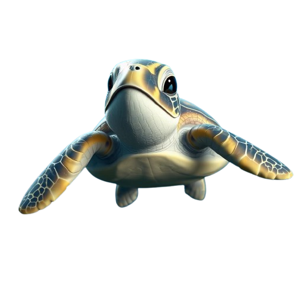

What are Underwater Volcanoes?
"Underwater volcanoes, also known as submarine volcanoes, are geological formations that erupt magma and gases from the Earth's interior onto the ocean floor. They are incredibly common, with estimates suggesting there are over 1 million of them scattered across the world's oceans. These volcanoes play a crucial role in shaping the ocean floor, creating new landforms and influencing the distribution of marine life. They can be found in various locations, from mid-ocean ridges to subduction zones, and their eruptions can range from gentle flows of lava to explosive events that can significantly alter the surrounding environment."
Characteristics of Underwater Volcanoes

-
Location: They are primarily found along mid-ocean ridges, where tectonic plates diverge, and in subduction zones, where one plate is forced under another.
-
Height: Submarine volcanoes are defined as independent features that rise at least 1,000 meters (3,300 feet) above the seafloor.
-
Eruption Style: Eruptions can vary significantly, ranging from gentle lava flows to explosive events. The interaction of magma with cold ocean water often leads to unique eruption dynamics.
-
Formation Of New Landforms: When underwater volcanoes erupt, they can create new landforms, such as seamounts (underwater mountains) and islands if the eruptions are substantial enough to reach the ocean surf
-
Impact on Marine Life: The nutrients released during eruptions can enhance local marine ecosystems, supporting diverse marine life around these volcanic features.
3 Underwater Volcanoes Worldwide
1) Kamaʻehuakanaloa Seamount (Loihi Seamount)

"Kamaʻehuakanaloa Seamount, formerly Lōʻihi, is an active submarine volcano that is erupting and lies approximately 22 miles (35 km) off the southeast coast of the island of Hawaii. It rises over 10,000 feet (3,000 meters) from the ocean floor. Its summit is currently about 3,200 feet (975 meters) below sea level. This seamount is part of Mauna Loa's flank, Earth's largest active volcano. The volcano has a very large geological history, with at least 400,000 years of rock formations. Its most recent eruption happened between February and August 1996. Discovered in 1940 by the U.S. Coast and Geodetic Survey, Kamaʻehuakanaloa has been an object of interest for scientists due to its potential to emerge as a new island should it continue growing. All these features and its continuing volcanic activity make it a striking feature of the Hawaiian Volcanic Chain."
2) West Mata

"West Mata is an active submarine volcano in the northeastern Lau Basin, some 200 km (124 miles) southwest of the Samoan Islands. Part of the Tonga-Kermadec volcanic arc, it extends from the North Island of New Zealand to Samoa. Discovered in 2008, West Mata features a volcanic cone that rises to an elevation of 1,174 meters from the ocean floor. This volcano has shown highly explosive activity with larger eruptions; even the deepest observed submarine volcanic eruption at 1,200 meters below sea level occurred here. The most recent known activity took place in 2016, and further research continues to learn more about its geological characteristics and eruption dynamics. West Mata is one of the exciting locations for scientists to explore submarine volcanic processes and unusual life forms that inhabit this extremely hostile environment."
3) Kick 'em Jenny

"Kick 'em Jenny is an active submarine volcano in the Caribbean Sea, about 8 km (5 miles) north of the island of Grenada and about 8 km (5 miles) west of Ronde Island in the Grenadines. It rises to a height of 160 meters above the surrounding sea floor, which makes it quite a noticeable feature in the area. Kick 'em Jenny is a part of the Lesser Antilles Volcanic Arc and is recognizable for being the only recognized active submarine volcano in the Eastern Caribbean. The volcano has erupted previously, with the last major activity in July 2015. The volcano is well monitored, being one capable of producing tsunamis and other hazards; hence, an object of interest for volcanologists and researchers studying submarine volcanic activity. The unique geological features and continuous activity of this volcano provide a key example for improving our understanding of volcanic activity in marine environments."